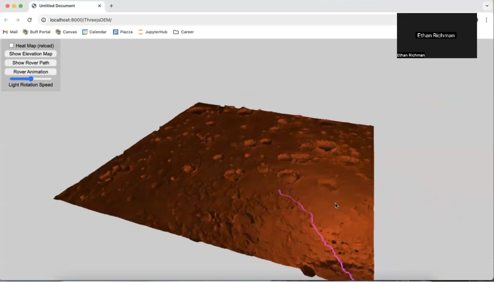
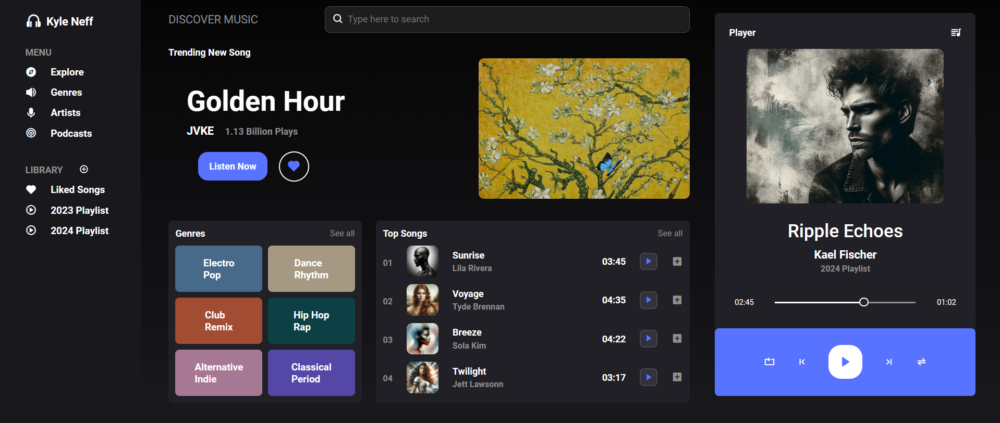
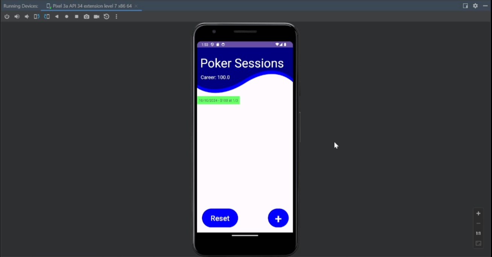

I am pursuing a Bachelor’s degree in Computer Science with a minor in Business at the University of Colorado Boulder, expected to graduate in 2025. My personal website features a portfolio of my projects, each highlighting different skills and objectives. These projects include detailed descriptions and visual examples, demonstrating both my technical expertise and practical applications.
To view my Resume, please click the link above. For inquiries or to get in touch, you can reach me via email using the contact link on the left.
Explore My Work
NASA JPL Rover Pathfinding
This project focuses on developing a Mars rover pathfinding tool that generates optimal navigation routes based on the terrain. The backend was built in Python and handles Digital Elevation Model (DEM) files, processing the terrain data to create accurate representations of the Martian surface. The frontend uses JavaScript and Three.js to visualize the Martian landscape. The visualization and animation allow users to explore the rover's journey in real-time, providing an interactive simulation of Mars mission planning.
Music Recommender
This full stack project focuses on creating a Spotify-like music player that generates a recommendation playlist based on the user's music preferences. The backend uses SQL to store all the songs, while the frontend is built with HTML and JavaScript. The music recommendation system is developed in Python and connected to the frontend using Flask.
Poker Tracks
This project involved developing an Android poker tracking app using Java and Android SDK, designed to track and manage poker sessions by allowing users to input details like time, stakes, and results. It features real-time profit calculations, dynamically updating users' overall profits or losses across sessions. The app also includes session management tools and persistent data storage, ensuring users can securely access their poker history across app launches for seamless tracking and performance insights.